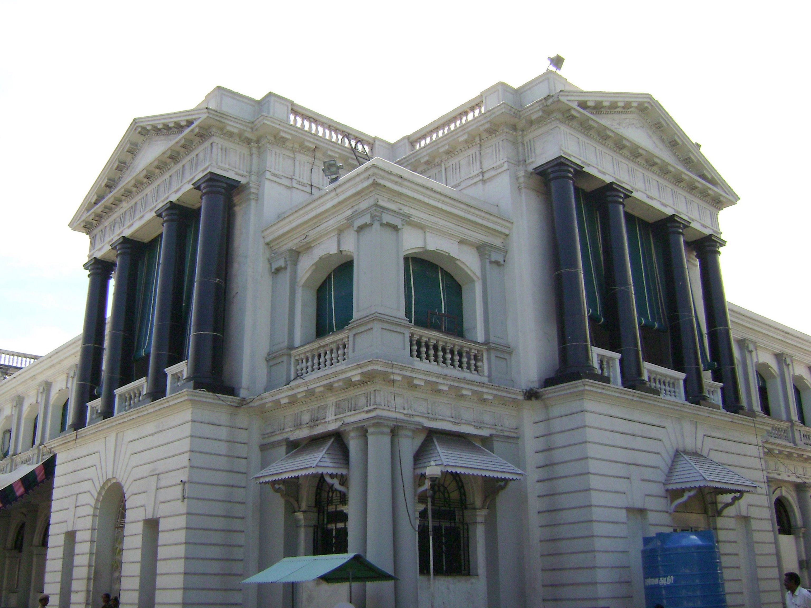

 Fort St George (or historically, White Town) is the name of the first English (later British) fortress in India, founded in 1644 at the coastal city of Madras, the modern city of Chennai. The construction of the fort provided the impetus for further settlements and trading activity, in what was originally an uninhabited land. Thus, it is a feasible contention to say that the city evolved around the fortress. The fort currently houses the Tamil Nadu legislative assembly and other official buildings. The fort is one of the 163 notified areas (megalithic sites) in the state of Tamil Nadu.
 Sadras (anglicized form of Sadurangapattinam) Fort is about 10 Kms from Mahabalipuram (Mamallapuram) and about 70 Kms from Chennai. The town was a centre for muslin cloth, pearl and edible oil even before the establishment of Dutch Coramendal. The fort, built in the early seventeenth century, was ruined during the second of the two battles that were fought between the British and the Dutch traders in 1818. Standing inside the dilapidated fort, one can imagine how the British tanks operating from the beach would have damaged the rear of the fort. The cemetery is similar to that of the one near the Pulicat lake (a bird sanctuary and another Dutch settlement near Chennai). The fort is believed to be used as a granary and there were spaces for the elephant army as well. The secret tunnel from the cemetery is the highlight. The scripts inscribed on the picturesque tombs in the grave garden are clearly visible even after 400 years (dates between 1620-1780 AD). The culture and lifestyle of the Dutch settlers seem to be sophisticated even during that period and the materials including the utensils that were retrieved during the excavations are now displayed for public viewing in the state museum in Madras (Chennai). The ruins are remains of a colonial era on the Indian subcontinent.
Sadras (anglicized form of Sadurangapattinam) Fort is about 10 Kms from Mahabalipuram (Mamallapuram) and about 70 Kms from Chennai. The town was a centre for muslin cloth, pearl and edible oil even before the establishment of Dutch Coramendal. The fort, built in the early seventeenth century, was ruined during the second of the two battles that were fought between the British and the Dutch traders in 1818. Standing inside the dilapidated fort, one can imagine how the British tanks operating from the beach would have damaged the rear of the fort. The cemetery is similar to that of the one near the Pulicat lake (a bird sanctuary and another Dutch settlement near Chennai). The fort is believed to be used as a granary and there were spaces for the elephant army as well. The secret tunnel from the cemetery is the highlight. The scripts inscribed on the picturesque tombs in the grave garden are clearly visible even after 400 years (dates between 1620-1780 AD). The culture and lifestyle of the Dutch settlers seem to be sophisticated even during that period and the materials including the utensils that were retrieved during the excavations are now displayed for public viewing in the state museum in Madras (Chennai). The ruins are remains of a colonial era on the Indian subcontinent.